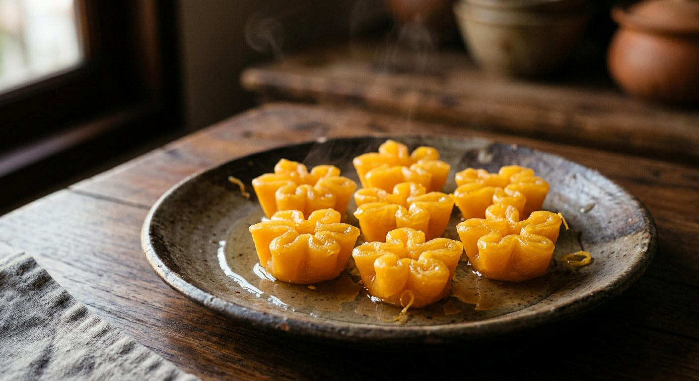

Egg yolks poached in jasmine-scented syrup, pinched by hand into pleated golden flowers — the Ayutthaya court sweet Thailand still serves at weddings and house-warmings.

ทองหยิบ sits in the "gold family" of Thai sweets — the trio of golden egg-yolk confections alongside ฝอยทอง (foi thong, golden threads) and ทองหยอด (thong yod, golden drops). Thai cooks attribute the family to ท้าวทองกีบม้า, Thao Thong Kip Ma — the Portuguese-Japanese court confectioner Marie Guimar — and Wongnai's recipe opens by inviting readers to "step into the spirit of Thao Thong Kip Ma" as they cook. NLoveCooking dates the sweet to the reign of King Narai and records its Portuguese influence. The name is the point: ทอง, gold, and หยิบ, to pick up or pinch — the finished sweet looks like a pleated golden flower, and serving it is meant to invite wealth. Aroifin places it among the ขนมมงคล, the auspicious sweets, and TrueID lists it at weddings and house-warmings.
The technique is egg yolks — nothing else but a little starch in some schools — whisked fluffy and poached in jasmine-scented syrup as round discs, then pinched by hand into pleats and settled into little ta-lai cups. Nothing is baked. The craft lives in the details: Wongnai turns the heat off and waits for the syrup to go still before a single spoonful goes in; its second recipe demands the syrup never exceed 112°C and never be stirred, or the sugar crystallises into flakes; NLoveCooking's jasmine water starts with flowers picked at dusk, when the scent is strongest, and steeped overnight. Wongnai also credits the 2018 Ayutthaya period drama บุพเพสันนิวาส (Love Destiny) with sending a whole generation back to the kitchen for the gold sweets.
The schools divide on the syrup. Wongnai's featured recipe poaches in a single 1:1 syrup and floats the cooked flowers in syrup ladled aside; the classic commercial method — Wongnai's second recipe, TrueID and ครัวป้ามารายห์ on Kapook — cooks in a thick syrup, then soaks the finished pieces in a thin syrup, which Wongnai says is there "to take the edge off the sweetness". Kapook's auntie adds the strangest rule of the lot: the cooking syrup should be one that has already cooked a batch of thong yip or foi thong, because reused syrup boils frothier — and without that froth, she warns, the drops come out flat.
| Thai | English | Amount |
|---|---|---|
| ไข่แดงไข่เป็ด | Duck egg yolks | 6 |
| ไข่แดงไข่ไก่ | Chicken egg yolks | 6 |
| แป้งข้าวเจ้า | Rice flour | 1 tbsp |
| แป้งมัน | Tapioca starch | 2 tsp |
| แป้งท้าว | Arrowroot flour | 2 tsp |
| น้ำ | Water | 800 ml |
| น้ำตาลทราย | White sugar | 800 g |
| กลิ่นมะลิ | Jasmine essence | a few drops |
The two-syrup classic (Wongnai no. 2, TrueID): a thin syrup of 500 g sugar, 700 g water and 1/8 tsp jasmine essence, dissolved over 10 minutes without stirring; a thick syrup of 1 kg sugar, 1 kg water and 1/8 tsp jasmine essence, 15–20 minutes, never above 112°C, ready when the bubbles turn fine. The cooked discs soak in the thin syrup before pleating. The brass-pan small batch (Kapook, Aroifin): 4 duck yolks, 1½ cups sugar, 3 cups water — syrup hot but never boiling, each disc cooked on both sides. The no-flour school: everyone but Wongnai's featured recipe poaches pure whipped yolk with no starch at all.
Flour or not. Wongnai's featured recipe works a mix of rice flour, tapioca starch and arrowroot into the yolks. Every other source — Kapook's two recipes, Aroifin, NLoveCooking, TrueID, even Wongnai's own second recipe — poaches pure whipped yolk. The floured batter holds its shape more reliably; the pure-yolk school is the older way.
One syrup or two. Wongnai's featured recipe uses a single 1:1 syrup and floats the cooked pieces in a ladled-aside portion of it. Wongnai's second recipe, TrueID and Kapook's ครัวป้ามารายห์ run the classic two-syrup system: thick syrup to poach, thin syrup to soak. Kapook's simpler recipe and Aroifin use one thin 1:2 syrup kept hot-but-not-boiling.
Duck, chicken, or both. Kapook's two recipes, Aroifin and NLoveCooking use duck yolks only — NLoveCooking for their volume and colour. Wongnai's two recipes and TrueID mix duck and chicken yolks, because as Wongnai's tip puts it, pure duck makes the sweet stiff; TrueID says the mix keeps it soft.
How many pleats. Wongnai's featured recipe pinches 4–6 pleats per flower. Wongnai's second recipe counts only odd numbers — 3, 5, 7 or 9 — the auspicious counts. TrueID teaches 3- and 4-petal flowers with explicit finger assignments. Everyone agrees the pleat itself is non-negotiable.
The brass pan. Kapook's small-batch recipe and Aroifin specify กระทะทองเหลือง, the traditional brass pan. Kapook's ครัวป้ามารายห์ recipe says explicitly you do not need one.
The jasmine. NLoveCooking and ครัวป้ามารายห์ scent the syrup with น้ำลอยดอกมะลิ — real jasmine flowers picked at dusk and steeped in water overnight. Wongnai's recipes and TrueID use bottled jasmine essence. When jasmine is scarce, NLoveCooking substitutes pandan-leaf water.
Syrup discipline. Wongnai's two recipes and TrueID turn the heat off and wait for the syrup to go still before dropping; Kapook's simple recipe and Aroifin keep it at "hot but not boiling". Wongnai's second recipe forbids stirring (the sugar crystallises) and caps the heat at 112°C. ครัวป้ามารายห์ demands syrup already used for a previous batch of thong yip or foi thong, for the frothier boil.
This recipe is translated from the following Thai-language sources. Where they disagree, we've said so.
1. Wongnai — "วิธีทำ เมนู 'ทองหยิบ' เมนูขนมไทยรสชาติดี จนวางไม่ลง!" (the recipe used here) — wongnai.com
2. Wongnai — "แจกสูตรฟรี 'ทองหยิบ' เมนูขนมไทยเครื่องทอง หวานหอมฮอตฮิตกันทุกยุค!" by น้องหลุมดำ (the two-syrup method, the 112°C and no-stirring rules) — wongnai.com
3. Kapook — "วิธีทำทองหยิบ ขนมไทยเนื้อนิ่มหวานฉ่ำเป็นมันเงาจับจีบสวย ๆ" (the brass-pan small batch) — cooking.kapook.com
4. Kapook — "ทองหยิบ ทองหยอด ขนมไทยอร่อยหวานสีสวย ทำไม่ยากมือใหม่ทำได้" สูตรจาก ครัวป้ามารายห์ (the reused-syrup froth rule) — cooking.kapook.com
5. TrueID Food — "แจกสูตรขนมทองหยิบ ขนมไทยมงคล หอม นุ่ม ละมุนลิ้น" (the finger-by-finger pleating technique) — food.trueid.net
6. Aroifin — "วิธีทำ ขนมทองหยิบ สูตรโบราณ หวานนุ่ม หยิบจีบสวยน่ากิน" (the auspicious-sweet meaning) — aroifin.com
7. NLoveCooking — "ขนมทองหยิบ ขนมไทย ขนมมงคล พร้อม 3 เทคนิคความอร่อย" (the King Narai history and the jasmine-steeping technique) — nlovecooking.com